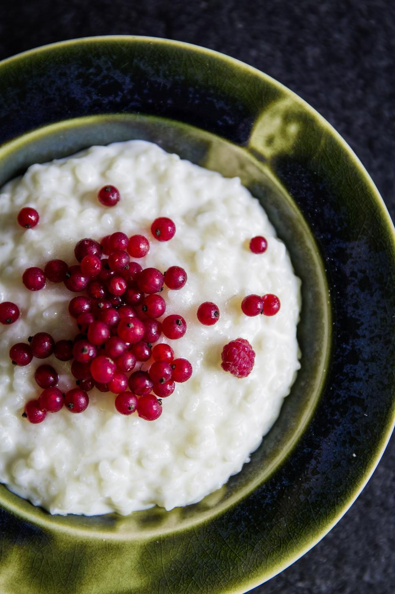

Home Page
Rice Pudding

Description
Rice pudding is the beautiful combination of
creamy rice, milk, and egg cooked into a
thick, soft, and delicious dessert. Further
enhanced by the addition raisins, sugar, and vanilla,
this is a dessert that you must try.
Ingredients
- 1 1/2 cups of cold water
- 3/4 cup of uncooked rice
- 2 cups of milk
- 1/3 cup of white sugar
- 1/4 teaspoon of salt
- 1 large egg
- 2/3 cup of raisins
- 1 tablespoon of butter
- 1/2 teaspoon of vanilla extract
Steps
- Gather all ingredients
- Cook rice for 20 minutes or until tender
- Transfer cooked rice to clean saucepan. Mix in milk, sugar, and salt.
Cook over medium heat, stirring often, until thick and creamy
- Mix in beaten egg and raisins. Continue to cook for 2 minutes. Remove
from heat and stir in butter and vanilla until combined
- Serve warm